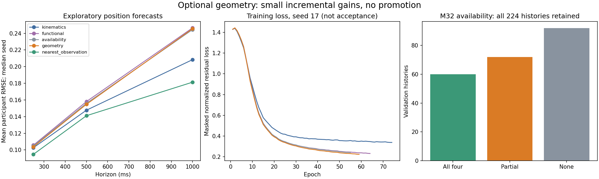

Bounded ablation complete. Small incremental gains; promotion gates not passed.
Four matched feature arms, three seeds, training-only selection. No history was dropped because geometry was missing.

Geometry descriptors improve on availability flags by 1.1% at 250 ms and 0.8% at 500 ms. Both are below the 5% gate. Kinematics-only and nearest-observation baselines remain stronger.
Report corrections and decision · Implementation and reproduction · Metric table · All scores and availability strata · Validation evidence
135 tests passed. Peak process-tree RSS: 7.06 GiB; no OOM. Scientific acceptance remains open: zero usable independent references and no fresh final evaluation.